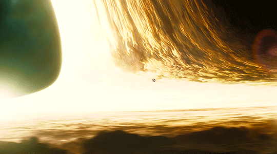

Exosolar Transmissions
Mission status is critical, but messages to and from earth are coming out garbled from the wormhole. Seems like they're all being cut off past a certain length...'
If you want command to look at your messages, click
here
.
Send a new message
Enter your message content.
Your messages:
Clear your messages:
Clear Notes
